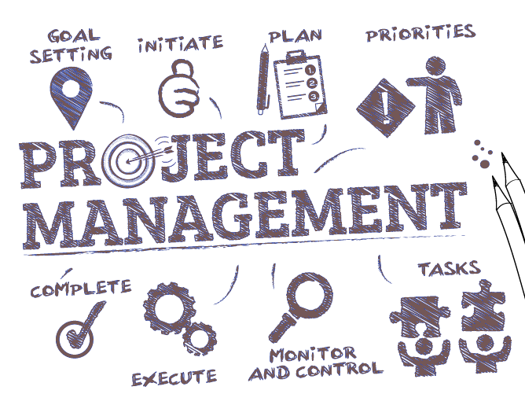

digital
supergroup
each project, a begining
...our support, never ending!
Project Overview
Welcome to your digital project story!
We care about you and your organizational needs and requirements, we therefore took some time to learn more about YOU.
Here is what we know...
Headquartered in South Africa and listed on the Johannesburg Stock Exchange, across sub-Saharan Africa, the Uk, Europe and Australasia, Super Group provides leading logistics and mobility solutions. With over 21 000 employees working across 24 countries, operating a fleet of over 296 000 vehicles, they leverage worldclass expertise and cutting-edge technology keeping SuperGroup established as the market leader in efficiency, customer service and innovation.
Simply put, this organization enables clients, shareholders and the communities they serve to succeed whilst prospering well into the future.
Super Group aspires to earn the label of “leading”, not as a mark of pride or arrogance, but as a constant reminder to push themselves to reach beyond the status of quo and to work relentlessly to accomplish the extraordinary.
Purpose:
Super Group’s solutions and services constitute the backbone for efficient and effective movement of goods and people across multiple geographies, sectors and markets. They are sharply focused on critical and resilient industries, with the firm focus on mobility and logistics solutions which plays a major role in today’s interconnected world.
Vision:
To be a leading mobility, fleet lease, logistics and transport group in the regions in which they operate.
Their vision, means many things for the Group:
- • being both the client partner and investment of choice;
- • consistently delivering shareholder value;
- • setting and achieving ambitious financial goals;
- • remaining a technological innovator that provides exceptional solutions to ever-changing business challenges;
- • striving to be the market benchmark in terms of efficiency and customer services;
- • being an employer of choice;
- • continue building a sustainable business that empowers our people and communities; and
- • balancing the needs of people, planet and profit.
Click on the below image to view Super Group at a glance,
a must see!
The SuperGroup Blueprint
Chapter 1:
Business Case Study
During 2024, the current means of communication gave way to a new service provider, a welcoming change.
A new era begun...
A whole new world was discovered!
ICTGlobe Management, herein referred to as the voice and secondary connectivity service provider, was selected and appointed by the client to execute the agreed required tasks to provide
a seamless WAN & Voice solution implementation.
The key demanding factures for this project was identified as a stable, scalable and reinforced communication solution which includes the implementation of both WAN & voice services. The organization is operational across various provinces of South-Africa and other countries abroad.
Chapter 2:
Project Purpose
The purpose of this web page is to state the project planning and the identified requirements that allowed for successful and timeous project implementation.
The current voice system in use was implemented for SuperGroup to support their work in relation to practice decisions based on their business operational requirements.
Requirements includes...
- • the handling of primary and secondary distribution;
- • cross-border transport;
- • warehousing;
- • supply chain;
- • consulting;
- • sales and merchandise;
- • courier services;
- • procurement;
- • new and used vehicle dealings;
- • vehicle-buying and selling processes;
- • payroll duties; and
- • employer and employee practices.
The Next Chapters...
Each chapter makes a book... each task makes a solution!
The following chapters identifies the project plan designed
to meet the organizations functional needs and
outlines the desired outcome of the project.
Chapter 3:
Goals & Deliverables
3.1. Project Objectives
The current solution requirements have been implemented based on information gathered through meetings held at business units during 2024. That was the start of our path towards successful implementation!
The client required a service provider who could provide a comprehensive plan to provide sustainable connectivity, voice and hardware installations in all regions they are operating in, within record time.
Project Objective:
The goals of this project is to provide Supergroup with a diverse set of software systems allowing automation of reporting, monitoring,
and full telephony management abilities.
Strategy:
The project purpose and decision-making were aligned with the relevant actions in manner of importance and with the goal to achieve the overall project objectives.
Benefit-driven:
The purpose driven and achieved benefits this project has on the client is partially listed as follows:
The solution was designed to be scalable and modular with uptime, reporting and capped operational expenses.
Lowest possible latency as ICTGlobe is directly peered with
all major content providers, having aggregation agreements with Fibre Network Providers
and Wireless Network Operators.
Provide a flexible voice environment with the ability to adapt
and expand to meet new requirements.
Cut the time involved in managing supported processes by
reducing the number of places where certain data is maintained,
displayed and accessed.
Provide secure access to telephone call logs, recordings
and call centre call handling.
Thourough alignmenet with stakeholders, ensuring that the team members and stakeholders are on the same page regarding the goals of this project.
A more detailed project brief can be viewed from the resource section available on the top menu.
3.2. Project Goals
To deliver operational functionality by developing and implementing certain communication software changes, fixes and user training. The said changes and training should allow the organization and its employees to identify not only new opportunities and customer service trends, but also potential risks or complaints quicker. As such, the new 3CX telephony system should allow the organization to provide their customers with exceptional means of communication through superior service delivery
3.3. Management Overview
The following sets out the project planned actions to achieve the deliverable goals:
Software and Hardware Evaluation
Customer Service Review
Create Structure and Routine
Co-ordinating work activities for execution
Quality and Detail
Fix and Change
Resources & Training
3.4. Assumptions and Constraints
Assumptions and constraints were identified throughout the project life cycle.
Identified constraints:
The final design of the telephony solution was based on the capabilities of the preferred technology, system features and was reliant on change approval from the client.
The project assumptions were derived from ongoing weekly scheduled video conference discussions, onsite meetings and evaluations, discussions with various stake holders, and the identified requirements.
Assumption and constrains was identified for the purpose of reducing risk of unforeseen additional requirements which could extend the project life cycle.
3.5. Points-of-Contact
Your points of contact is listed in the PDF; Scenario Framework,
available from the resources section.
Chapter 4:
Solution Design
This section will describe the software systems, system users
and integrations forming part of the Supergroup IP Voice project.
4.1 Overview:
3CX IP PBX (Internet Protocol Private Branch Exchange), voice solution was implemented. The new phone system now routes and manages calls within the supply chain, dealerships, and call centre sectors through secure internet utilization.
4.2 Outline:
This project was designed to provide a comprehensive plan that will replace the current voice solution of the client.
The outcome of this project is planned to empower employees, agents and managers, with the needed access and training to fully utilize the identified software resources and features. This should provide the client with the ability to operate independently and effectively whilst keeping true to the organizations highly established customer service and operational standards.
4.3 3CX Software Summary:
| Features |
|
| Key Aspects |
|
| Technology |
|
| Components |
|
Chapter 5:
Project Initiation
5.1. Project Implementation Schedule
Phase 1: Preparation and Planning (1- 3 Weeks)
- The IP PBX voice solution required wiht this project, involved several phases which concluded the voice solution implementation shcedule.
- During ongoing weekly scheduled online meetings, onsite meetings and discussions with various stake holders the following project assumptions were made:
- Needs Assessment:
- Current and high risk stakeholder evaluations was made through various discussions and meetings. The focus of these communication strategies were to outline and determine the end user requirements, needs and desired feauters that should be aligned with current business operations in order to effectively execute daily business operations after implementation of the new IP PBX voice solution.
- Vendor Selection:
- ICTGlobe Management, herein refered to as the voice service provider and secondary IP provider, was selceted and apointed by the client to execute the agreed required tasks in order to provide a seemless service implementaion, as set out in point 2 of this section; Solution Oveview.
Phase 2: System Configuration (1-7 weeks)
- System Setup:
Fortigate installations and BGP establishment; 26 September 2024. - Testing and Change:
Network testing, voice inbound and outbound call routing confirmed; 13 October 2024. - Number Porting:
The first porting process was initiated on 16 October 2024, and the last was completed on 28 Novemeber 2024. - Extension Setup:
3CX User extension configurations was done in line with the installation scheduled and as per defined requirements observed during site visits and evaluations. - Call Flows:
Unique call flow configurations was done based on each unique business units standards, requirements and operating funtional needs.
Phase 3: Hardware Installation (1-7 weeks)
- Device Selection:
For this voice solutions a selection of SNOM phone devices and hardware was selected, puchused and configured. - Hardware Deployment:
Part of the installation process involved the installation of IP phones at various locations and connecting them to the network. Some instances required network change control schedules and implementation in order to proceed with installation. - Pre-Installation Testing and Troubleshooting:
Pre-Installation testing requirements was identified and communicated internally, including various recomended troubleshooting methods. - Post-Installation Evaluations:
For each business units completed change implementation, installation evaluation 'team defined tasks' was identified and done. In line with the technical onsite evaluation protocols, and for each business unit, an authorized representative per site confirmed set evaluation points to be correct and implemented sufficiently.
Phase 4: Deployment and User Training (1-7 weeks)
A crucial part of any organisation is the understanding of system processes and knowledge sharing. At ICTGlobe, we have identified certain measures that can be taken to enrich and expand on the basic and required knowledge and skills which may play a role regarding certain software and processes forming part of this solution.
- Onsite Training:
The purpose of this training was to provide employee and user at each business unit with the adequate guidance and knowledge to effectively handle call from their new telephony devices. - Receptionist Training:
As the individuals that recieve and handle most incoming calls, receptionists recieved additional training to ensure that the required tasks for call handling can be executed effectively. - 3CX Basic Certification:
For the organization to fully understand the processes and features the 3CX solution will provide them with, selected members of the organization will have the opportunity to complete the 3CX Basic Certification.
Training resources and links are available from the 'Resources' section on the top menu.
Phase 5: Monitoring and Support
Ongoing...
- Monitoring:
Connectivity speed, latency, packet loss, and jitter are being assed regularly to ensure the effectiveness of the initiative. To track connectivity performance and possible upgrades or expansion, a monitoring and evaluation framework was established which includes regular reports. - Support:
Our customers' expectations are highly valued therefore, and as part of this project, our goal is to provide you with exceptional ongoing support by our dedicated and skilled support professionals.
The Project Timeline Schedule can be viewed from the 'Timeline' button below.
Chapter 6:
Execution & Implementation
The implementation phase of the project consisted of multiple tasks, tests and operational evaluations.
The following listed actions provides an overview:
6.1. Implementation Overview
6.1.1 Project Management
A dedicated project team was appointed to oversee the coordination, implementation and monitoring of the Wan & Voice solution project. Dedicated and appointed ICTGlobe team members, including senior technicians and product specialists, were assigned to ensure alignment with the identified requirements to achieve the planned goals and deliverables as set out for this project.
6.1.2 Engage with Stakeholders
ICTGlobe representatives and product specialists, was appointed to consult with business units’ senior management and stakeholders, formally initiating the start of this project. During these sessions a list of requirements, changes, actions and required staff training was observed and acknowledged.
6.1.3 Resource Allocation
Resources were carefully evaluated, planned and allocated effectively which ensured the success of the project through efficient deployments across all the identified areas.
6.1.4 Project Execution
Project schedules were established after consulting with the client. It defined the project phases identified to ensure efficient execution of the project deliverables. To manage the scope and expected deliverables, the project was divided into two sperate frameworks: Connectivity and Voice.
6.2. Connectivity Roll Out Schedule
6.2.1 Connectivity Summary
It was envisaged that connectivity should be provided to 53 business units. The connectivity roll-out plan started in September and was completed during December 2024. During the time of this web site release, there was three outstanding links which were reliant on the chosen Fibre Network Operators and solutions. Temporary solutions were applied where needed.
6.2.2 Geographical Regions Covered
| Gauteng | Mpumalanga |
| KwaZulu-Natal | Western Cape |
| Free State | Eastern Cape |
| Northwest | Northern Cape |
| Limpopo |
6.3. Voice Roll Out Schedule
6.3.1 Voice Summary
The voice roll-out schedule started on 1 September 2025, the last business units voice installation
and cut over was completed on 29 November 2025 which concluded the voice time schedule.
The voice cut over scheduled was planed and implemented in the same nine provinces
listed in section; 6.2.2 Geographical Regions Covered.
6.3.2 Stock Allocation
Over 3000 hardware devices were configured and installed for the identified business units. The hardware included, amongst others; desk phones, DECT handsets, routers and base stations.
6.3.3 Number Allocation
A total of 4 781 numbers was ported, distributed and configured in accordance with the clients and organizational requirements of each individual business unit or site. In addition to the number allocation, over 3000 user extensions were configured and implemented based on the IP PBX requirements set out for these different business units.
6.3.4 Implementation Schedule
This subsection provides the schedule of activities accomplished and the principal processes
that were covered with the WAN and Voice Services project.
• WAN Infrastructure
• Connectivity Services
• Failover Connectivity
• Network Management & Reporting
• Hardware Configuration
• Installations
• Telephony Solution
• Training and Resource Allocation
• Monitoring and Support
Chapter 7:
Risks & Dependancies
The following items describes the identified connectivity risks and dependencies encountered with during implementation of the connectivity time schedule
Connectivity
| Risks | Impact | Description |
| Site Access Delays | Low | Some sites were identified as closed sites which required additional approvals. |
| RFO Compliance | Medium | In some cases, the required RFO was not received within the expected timeframes planned for installations. |
| Line of Site | Medium | Alternative solutions was proposed and implemented for areas with no line of site. |
| Landlord Availability | Low | Installations was rescheduled and completed based on landlord availability and in alignment with the project deadline. |
| Health and Safety | Medium | Restricted access to certain sites due to strict health and safety requirements which caused a minor delay with the required tasks to complete connectivity installations. |
| Wireless High Sites | High | Approvals could take up to 8 weeks, for these businesses temporary solutions was proposed and implemented. |
| Fiber Wayleave | High | These required approvals can take up to 8 weeks. Temporary alternative solutions were proposed and implemented for the effected business units. |
Voice
| Risks | Impact | Description |
| Hardware Stock Out | Low | Due to certain unforeseen additional stock required in some cases, stock procurement needed to be reviewed to adjust to business requirements |
| Hardware Failure | Low | Minimal devices were reported and these hardware units were replaced |
| Hardware Misconfigurations | Medium | These instances may have beed due to other factors which includes, DHCP config or access to switches to config on site. |
| Resource Availability | Very High | Due to the amount of simultaneos installations accross South Africa, the lack of resources was a high risk factor that was monitored and managed in order to complete changes in time. |
Chapter 8:
Project Roll Out
This section provides a link to the Voice Gantt Chart where you can view the success of your IP PBX voice project with ICTGlobe.
Chapter 9:
Key Performance Idicators
This section describes the key performance indicators used to measure the success of your IP PBX integration project with ICTGlobe.
|
 |
|
|
|
|
||
|
 |
|
Chapter 10:
SNAG List
This section describes the key performance indicators used to measure the success of your IP PBX integration project with ICTGlobe.
| Reported | Description |
| Telephony | Phone issues reported, was mainly based on configuration change requests such as; name changes, extension updates and provisioning, rather than device failures. Phone issues and current status of same, can be viewed from the below redirect button; 'Telephony'. |
| Call Handling | Call handling errors reported, mostly involved user direct lines which did not work sufficiently. The call handling issues and status of same, can be viewed from the below redirect button; 'Call Handling'. |
| User Extension | Extension issues reported, although it does not sound major, can in fact have some major impact, especially with regards to calls to sales agents. Our super support team assisted tiredlessly to have the extensions regrouped and sorted. The extension problems reported, can be viewed from the below redirect button; 'Extensions' |
| Major Impact | For both new and ongoing projects, regardless of type, it should always be acknowledged that there will be risks. Although definite and potential risks are identified during the project evaluation phase, there is never a set guarentee that ALL risks can be avoided. Major issues reported after installtions, was the main focus of our supper technicians. With their experience and technical knowledge, most major issues reported was resolved in a timely manner. Issues reported to have major impact on business units and, or users, can be viewed from the below redirect button; 'Major Impact'. |
| Other | Any additional bugs, errors, problems or issues not listed within any of the above SNAG sections will be listed once identified. Until such time, there will not be a button to redirect to that section. |